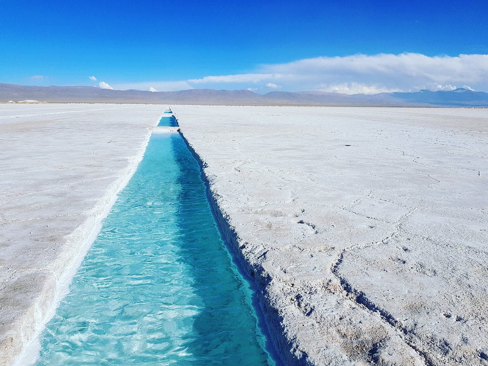
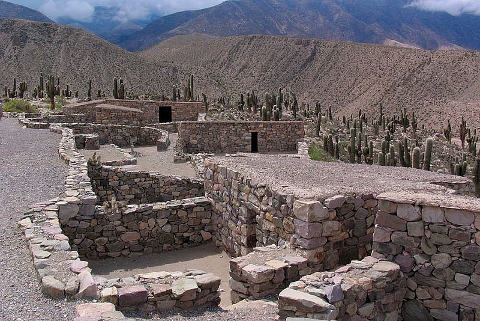
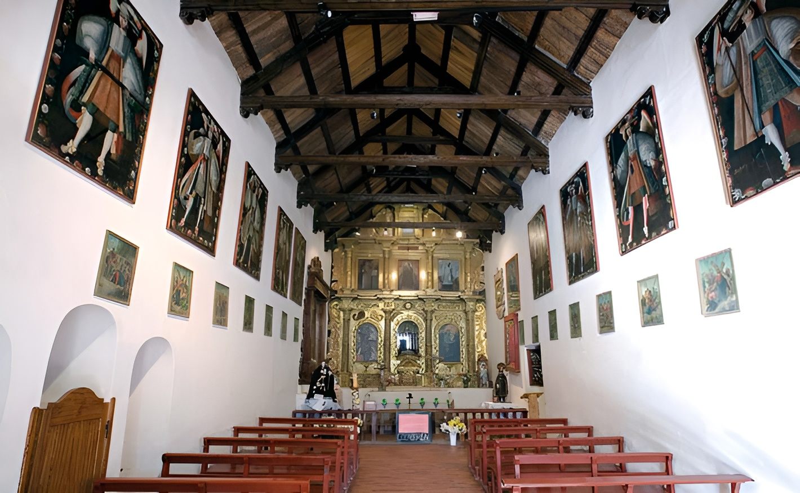
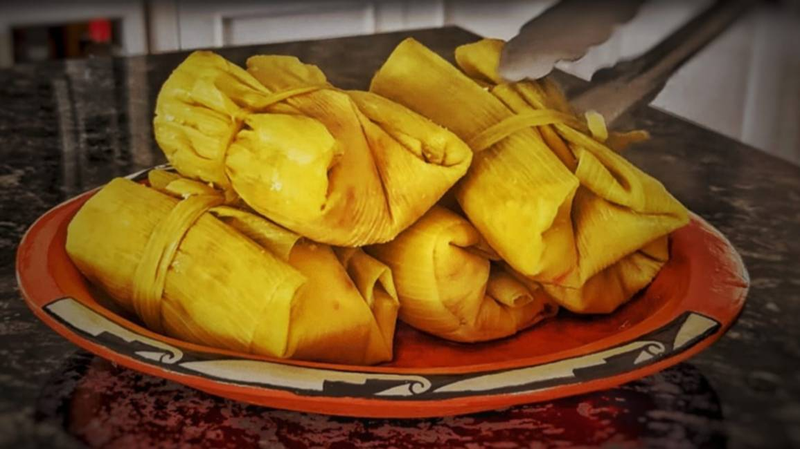
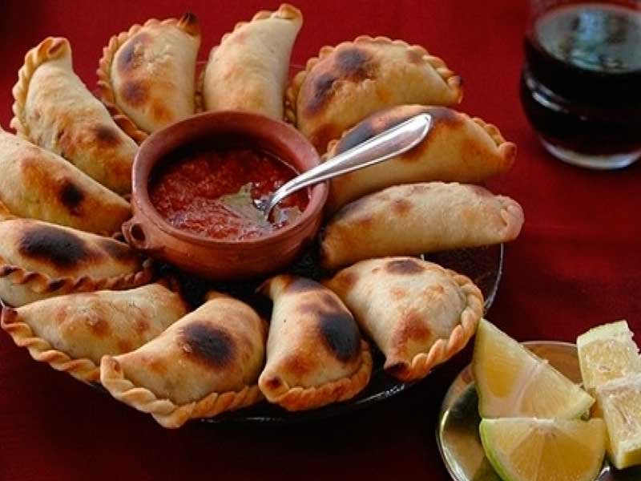

Cerro de los 7 Colores (Purmamarca)
Una maravilla geológica originada hace 75 millones de años. Se recomienda recorrer el Paseo de los Colorados al amanecer para apreciar mejor sus estratos de sedimentos.
- Altitud: 2.300 msnm
- Actividad: Fotografía y senderismo leve.
Salinas Grandes
El tercer salar más grande de Sudamérica. Un espejo blanco infinito donde se extrae sal de forma artesanal. Es fundamental llevar anteojos de sol y agua.
- Acceso: Cuesta del Lipán.
- Clima: Extremo, mucha radiación.
Valle de la Luna (Cusi Cusi)
Ubicado en la Puna, presenta formaciones de arcilla roja y gris que parecen un paisaje lunar. Es uno de los tesoros menos conocidos y más impactantes de Jujuy.
- Ubicación: Ruta 40, cerca de Cusi Cusi.
- Recomendación: Camioneta 4x4.
Pucará de Tilcara
Fortaleza defensiva de los Omaguacas. Permite observar la organización social y arquitectónica de los pueblos andinos antes de la llegada de los Incas.
- Visita: Incluye jardín botánico de altura.
- Importancia: Monumento Histórico Nacional.
Iglesia de San Francisco de Paula (Uquía)
Famosa por albergar los óleos de los Ángeles Arcabuceros, traídos desde el Cusco. Es un testimonio único del arte barroco andino del siglo XVII.
- Dato: Los ángeles visten como soldados españoles de la época.
- Entrada: Gratuita (se pide colaboración).
Cabildo de San Salvador
Ubicado frente a la plaza Belgrano, este edificio colonial es el centro administrativo histórico. Aquí Belgrano presentó la Bandera de la Libertad Civil.
- Atractivo: Recova histórica y museos internos.
- Ubicación: Capital de la provincia.
Humitas en Chala
Preparadas con choclo fresco rallado, queso y albahaca. Se cocinan al vapor envueltas en las propias hojas (chalas) del maíz. Pueden ser dulces o saladas.
- Mejor época: Enero a Marzo (temporada de choclo).
- Maridaje: Vino Torrontés jujeño.
Api con Buñuelos
El Api es una bebida espesa hecha de maíz morado, canela y clavo de olor. Se sirve caliente y es la pareja inseparable de los buñuelos con miel de caña.
- Dónde probarlo: El Buñuelódromo de El Carmen.
- Sensación: Dulce, especiado y reconfortante.
Empanadas Jujeñas
Se caracterizan por llevar carne cortada a cuchillo, papa picada fina y cebolla de verdeo. A diferencia de otras provincias, se sirven con salsa picante (llajua).
- Ingrediente clave: Grasa de pella y comino andino.
- Variedad: También hay de carne de llama o charqui.
| Excursión / Servicio | Destino Relacionado | Precio (ARS) | Estado |
|---|---|---|---|
| Safari Fotográfico | Salinas Grandes | $45.000 | Disponible |
| Trekking de los Colorados | Purmamarca / Valle Luna | $18.000 | Disponible |
| Tour Arqueológico | Pucará de Tilcara | $20.000 | Disponible |
| Casco Histórico y Cabildo | San Salvador de Jujuy | $12.500 | Disponible |
| Circuito Ángeles Arcabuceros | Iglesia de Uquía | $25.000 | Disponible |
| Clase de Cocina Andina | Humitas y Empanadas | $30.000 | Disponible |
| Ruta del Buñuelo | El Carmen / Api | $12.000 | Disponible |